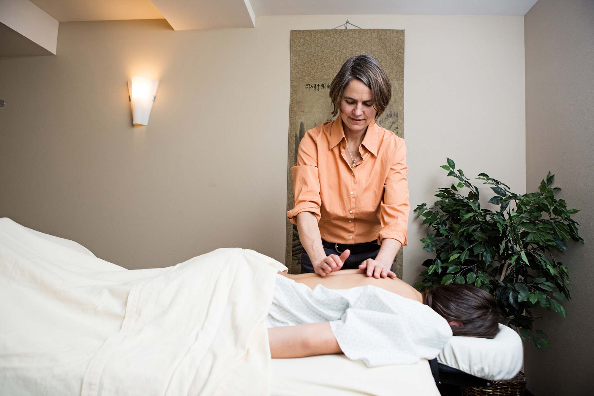
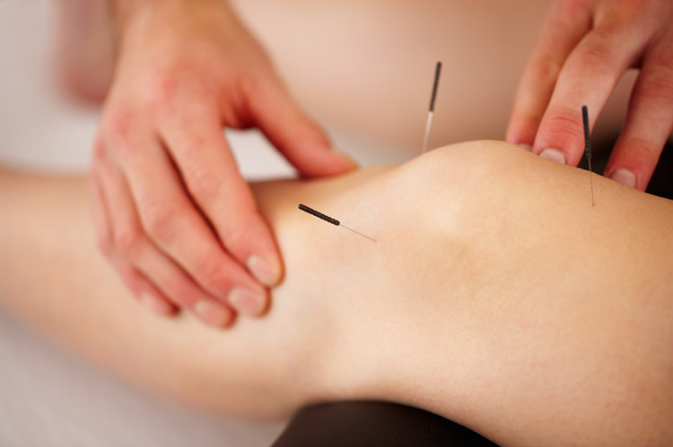
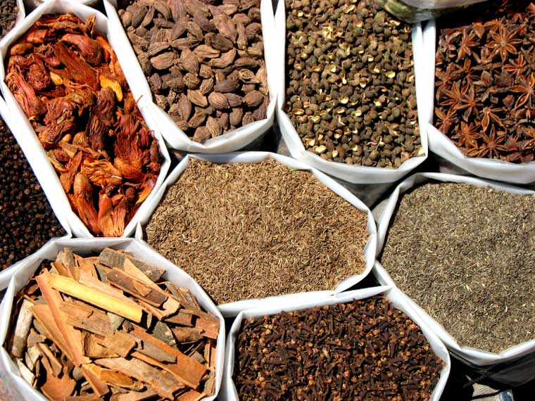
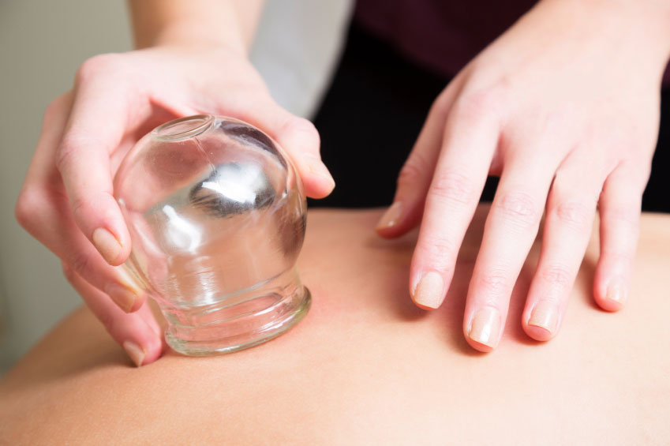
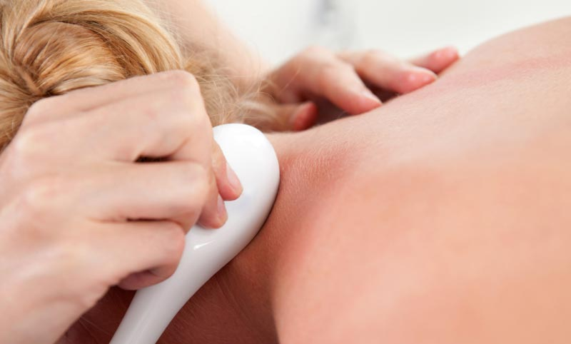

Elena Mejia is an East Asian Medicine and Family Nurse Practitioner. She utilizes conventional Western medicine to understand your condition while harnessing the energetic medicine of acupuncture to expand that understanding. Her practice incorporates acupuncture, herbal therapy, nutrition, massage, as well as other modalities to treat a variety of conditions, including women's health, chronic illness, pain, insomnia, and emotional health issues. With a background in Eastern and Western medicine, she can evaluate your current medical condition, medications, offer complimentary approaches to improve your health, and help you navigate what may seem like a confusing path to wellness. She believes it is important to take the time to get to know you. In that way she can work with you to gain an understanding of your health concerns, and seek longterm solutions.
This ancient form of medicine is based on the belief that we are endowed with the ability to heal within ourselves. At times we experience what is thought of as imbalances in our body or mind which in turn lead to illness. Through the medicine, we are guided to tap into this inner wisdom so that it can not only nurture us towards a state of well-being, but support us to live healthier lives. Because our spirit is connected with our health, the better we feel, the more fully we can connect with self. This experience supports us to live at our fullest potential
Acupuncture involves the insertion of single use sterile needles into specific points mapped out on the body. These points are located along pathways known as channels or meridians which are found from head to toe. The theory of acupuncture is based on the belief that life is sustained by the harmonious flow of qi (life force or vitality) in the meridians. When the qi becomes blocked, deficient, or unbalanced disease can arise. Stimulating various points with acupuncture needles is thought to promote the harmonious flow of qi, which in turn supports us to prevent or overcome illness. Other treatments, such as herbal therapy, cupping, guasha, and massage also help to balance the flow of qi.
Initial consultation is similar to visiting your primary care provider. The appointment can take longer, however, and typically ranges from 60 to 90 minutes. During this time applicable information is gathered which includes your medical history and examination of the tongue and pulse. This includes examination of the tongue and pulse. The remainder of the visit is dedicated to your treatment with acupuncture or other modalities.
Follow up visits are similar, except that they usually take 30 to 45 minutes depending on the condition being addressed and treatment provided.
Eat and drink water prior to your appointment so that you are not thirsty or hungry when receiving a treatment. However, avoid large meals right before your appointment.
Wear loose fitting clothing that can be easily moved or adjusted to allow for the treatment. Cover sheets are also provided.
Do not drink alcohol before an appointment.
Avoid vigorous exercise before and after your appointment.
Bring a list of current medications, vitamins, and supplements, including dosages.
Generally no, although some areas of the body can feel more sensitive than others. Most people find acupuncture and any of the other treatments very relaxing, in fact some even fall asleep. Having acupuncture is often described as a feeling of pressure or a dull sensation at the point where the needle is inserted. The needles used are very thin and said to be about the size or just slightly bigger than a strand of hair. Most people are surprised at how painless it is, especially children.
Herbal therapy has long been an integral part of Traditional Chinese Medicine (TCM). Herbal medicine may be used independently or as an adjunct to other treatments to support the body in achieving a state of balance. There are many types of herbal preparations, such as bulk dried herbs, granules, tinctures, and pills. The whole plant or part of a plant, such as the root, bark, stem, or seeds, may be used. Specific combinations of herbs, known as herbal formulas, have been developed and refined over thousands of years. These formulas have been designed to treat a multitude of conditions and constitutions and are frequently modified. Many common conditions may improve with herbal therapy including women's health, gastrointestinal, overweight, stress, fatigue, diabetes and hypertension. We use only good manufacturing practice (GMP) certified herbal preparations. GMP guidelines provide strict manufacturing, testing, and quality assurance in order to guarantee that the herbal products are safe for consumption.
Cupping uses cup-like implements made of different materials, such as glass, plastic or bamboo, that are placed on the body with suction. The cups may be left in place or moved across the surface of the body. The skin, connective tissue and muscle are gently pulled upwards from the suction. Some people describe it as feeling like deep tissue massage. The treatment helps promote the flow of blood and lymph, thereby promoting healing of tissues. It can be helpful in breaking up scar tissue and adhesions. Some conditions commonly treated include chronic muscle pain, cough and asthma.
Guasha is similar to cupping in that it moves blood and lymph and is effective at breaking up scar tissue and adhesions. It is done using a smooth instrument that can be made from many different types of materials, such as porcelain, stone, or jade. This method involves repeated movement across the skin. It is indicated for conditions similar to cupping. Both cupping and guasha can be used on their own or as adjuncts to acupuncture and herbal therapy.
One of the most valuable components of healing is how we care for our bodies. This includes what we eat. Nutrition is a fundamental part of Chinese medicine. Diet therapy is considered a first line treatment and has the potential to alleviate many of our symptoms as well as cure the root or cause of an illness. When combined with acupuncture or herbal therapy, the effect can be that much greater. According to Traditional Chinese Medicine (TCM) foods have different properties, such as warming or cooling, astringing or dispersing. By eating in accordance with the seasons and taking into consideration our own bodily constitutions, we can have a profound and long-lasting impact on our health and wellbeing.
As an acupuncturist, lactation consultant (IBCLC), family nurse practitioner, and mother of two, I offer a holistic approach to breastfeeding. I can help you with issues such as getting your baby to latch, sore nipples, engorgement, low or high milk supply, plugged ducts and mastitis. I can also help with a sleepy, fussy or colicky baby, as well as with most other feeding concerns. For new mothers, I make home visits. Please call the clinic or email me at wallawallaacupuncture@gmail.com to find out more about this service.
The practice of East Asian Medicine has been tested and refined over 2500 years. It is now used all over the world as a reliable method of treatment for many conditions, so many that it is not possible to list them all. Below are some examples of commonly treated conditions. For a detailed listing see the WHO article, Acupuncture: Review and Analysis of Reports on Controlled Clinical Trials (2003). Both adults and children, including teens, can benefit from treatment.